Recetas de Semana Santa
La Paz
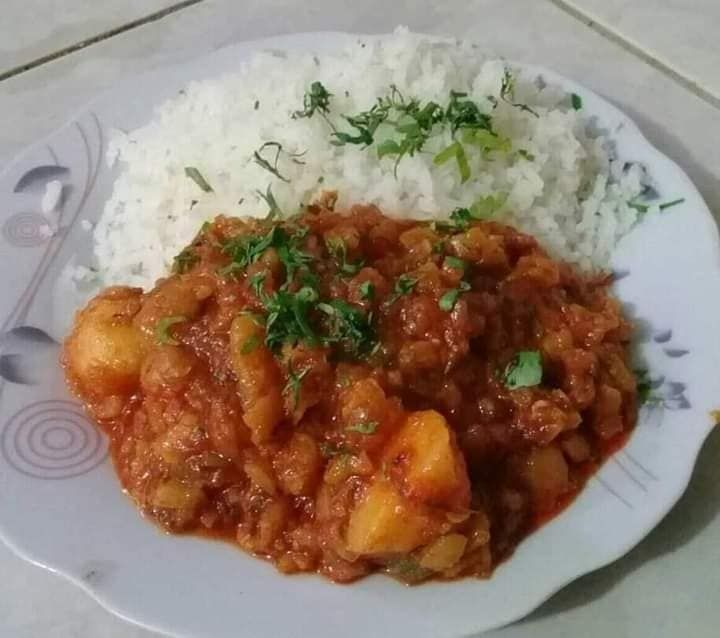
Ají de Papaliza
Plato más consumido en La Paz, Oruro, Potosí y Cochabamba, es un ahogado de verduras, papas y papaliza, acompañado de arroz. Algunas versiones pueden incluir carne de res.
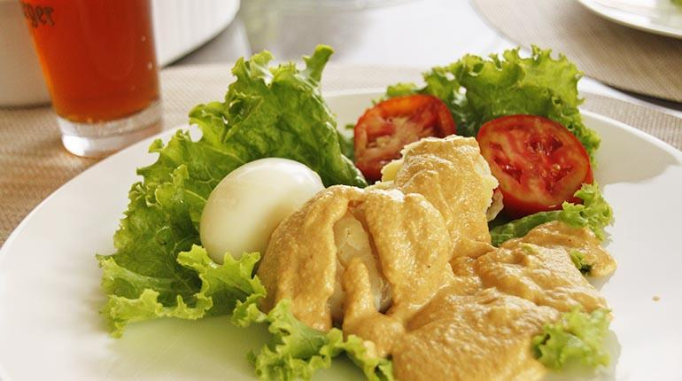
Papas a la Huancaina
Plato de origen Peruano, adoptado y preparado de forma un poco diversa, contiene: Papas, tomate, lechuga, ají de maní, queso crudo y huevo duro.
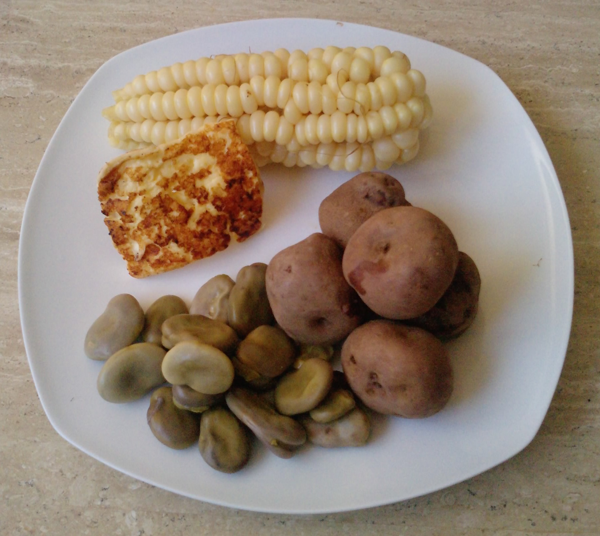
Plato Paceño
Mayormente consumido en La Paz, consta de choclo, habas y papas hervidas. Acompañadas de queso frito o crudo. Entre sus versiones pueden incluír carne de res.
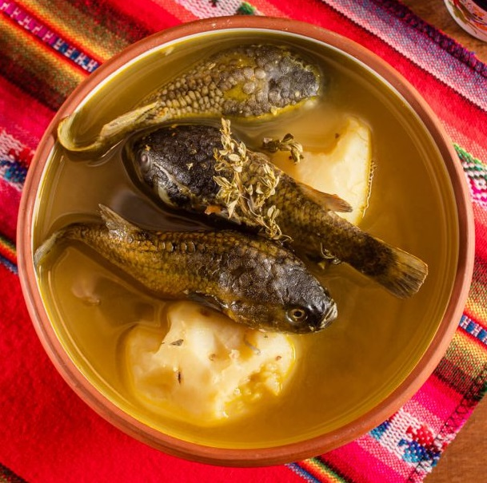
Wallake
Consumido para combatir el frío y ganar energía en las mañanas. Es un caldo de Karachi, papa, chuño, k'oa y ají de vainas
Potosí
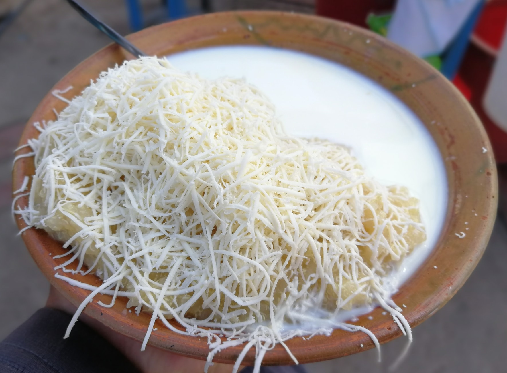
Pesque
Consumido mayormente en La Paz, Oruro y Potosí. Es quinua cocida en leche de vaca, acompañado de queso y/o ahogado de cebolla con ají amarillo.
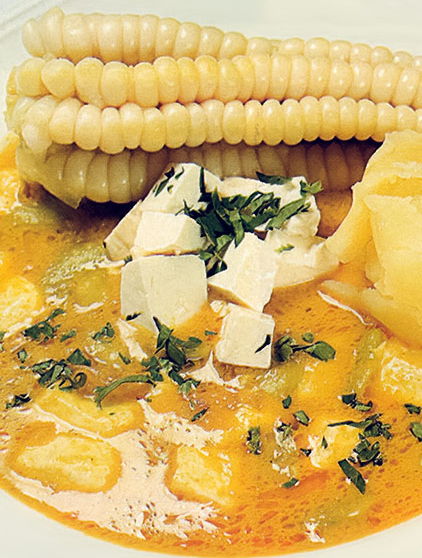
Queso Humacha
Consumido mayormente en La Paz, Oruro y Potosí. Es un plato que combina papas, queso, choclo, habas, ajo y cebollas cocinadas con ají amarillo
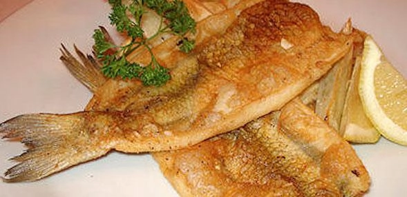
Pejerrey
Consumido en todo el país durante semana santa, es usualmente frito y acompañado de distintas maneras: arroz, ají de papa, ensaladas y/o con limón.
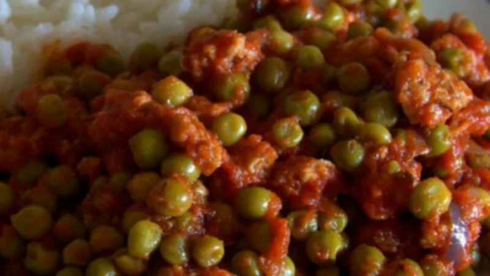
Ají de Arverjas
Un clásico en Semana Santa y Todos Santos. este plato contiene papas, arverjas, cebolla, ajo, zanahorías y ají. Algunas versiones incluyen carne de res o soya.
Oruro
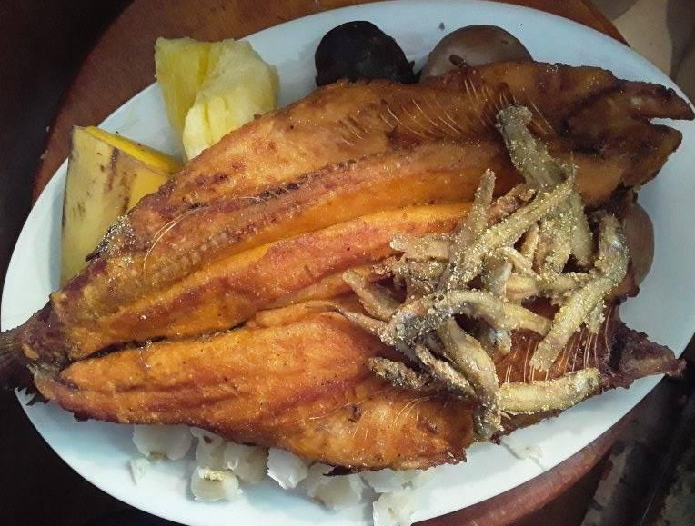
Trucha con Ispi
Consumida en La Paz, Oruro y Potosí. En este plato se frie la trucha y el ispi. Es acompañada con mote, chuño y papa.
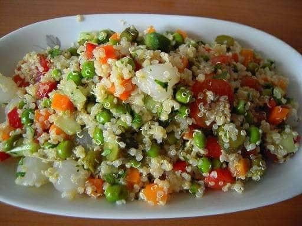
Phisara
Plato que consiste en quinua graneada sin sal, acompañada de queso rallado. Algunas versiones recientes incluyen arverjas y zanahoria.
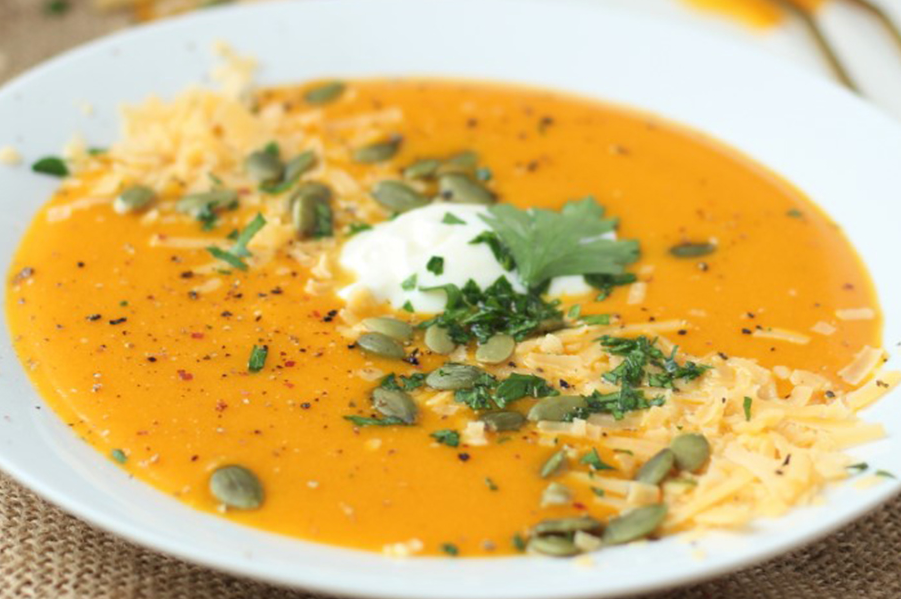
Sopa de Zapallo
En Oruro se prepara con un fondo de ave a base de menudencias de pollo, cebolla, zanahoria y perejil. La sopa puede llevar nueces, crema de leche y/o queso.
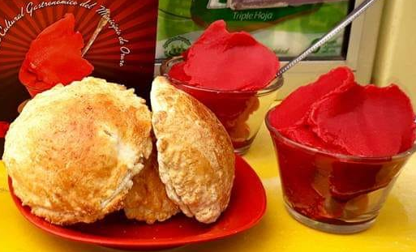
Helado de Canela
Consumido mayormente en La Paz, Oruro y Potosí. Es realizado artesanalmente en barriles con hielo y sal.
Cochabamba
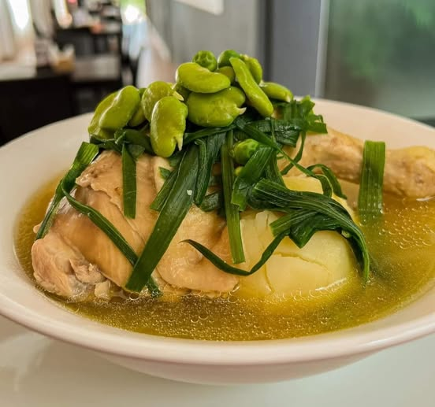
Chanka de Pollo
Una sopa de pollo con cebolla roja, apio, habas, cebollin, zanahoria y papas. Su sabor particular se obtiene al freir previamente antes hervir el pollo.
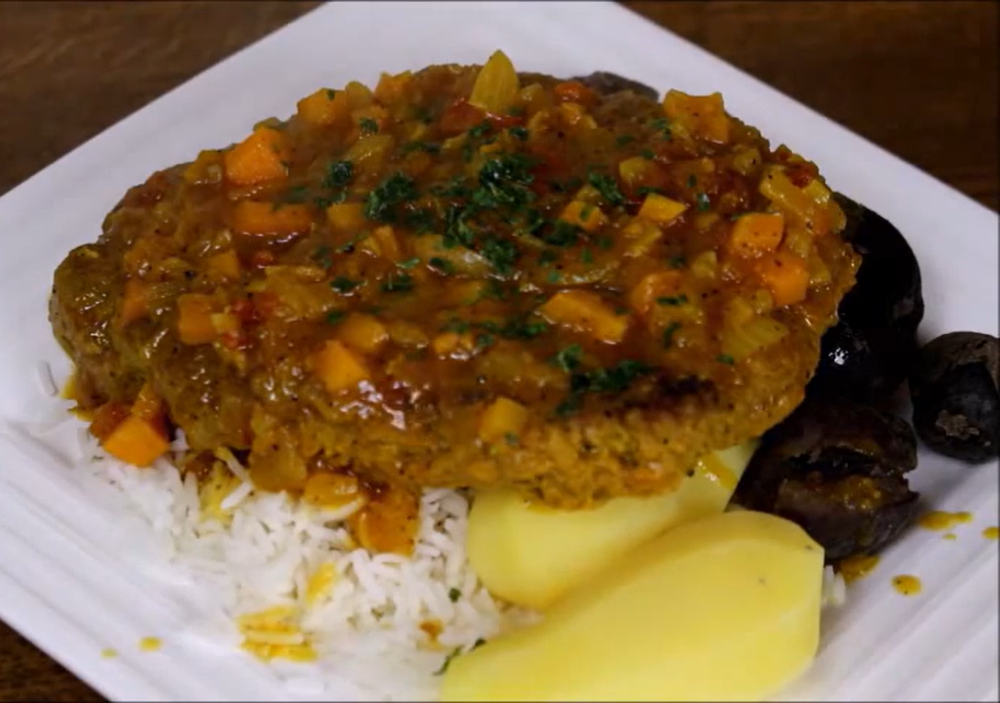
Falso Conejo con Carne de Soya
El clásico falso conejo pero elaborado con carne de soya en reemplazo de carne de res.
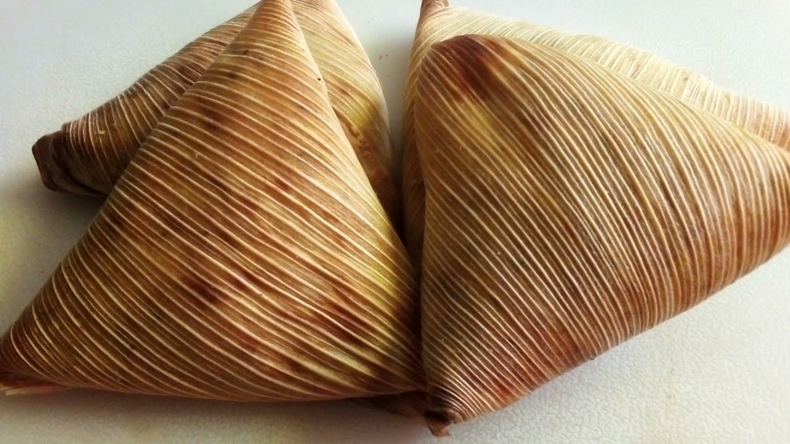
Huminta
Se trata de una preparación a base de maíz, que se cocina dentro de las hojas de choclo. La huminta puede ser dulce o salada, y se suele consumir tanto en celebraciones como en comidas cotidianas.
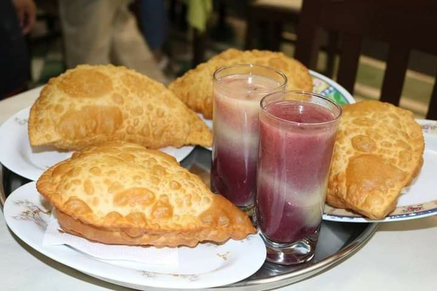
Api con Pastel
Bebida de maíz, canela, clavo de olor y limón. Acompañado con un pastel o buñuelo.
Tarija
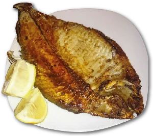
Pescado Frito
El pescado frito es una preparación en la que el pescado se rebosa con pan molido o mollete hasta quedar crujiente por fuera y tierno por dentro y es acompañado de limón, mote y papa.
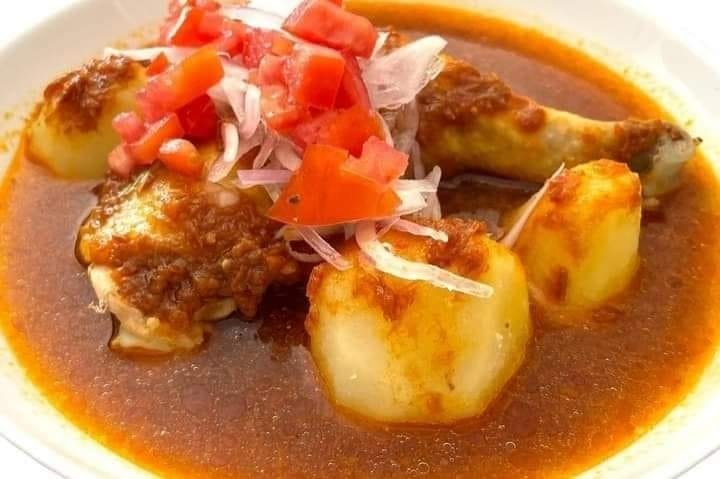
Chancao
El chancao de pollo o chancao de gallina es una receta tradicional de Tarija, se lo sirve con hojas de lechuga, presas de pollo, papa, bañado con ají amarillo, adornadas con salsa cruda de cebolla, tomate, arvejas y huevo duro en rodajas.
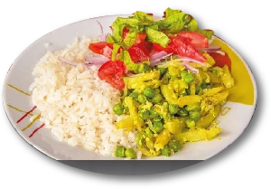
Arvejada
Es un plato tradicional hecho de arvejas, cebolla picada, papas fritas, huevo frito, perejil picado, palillo, huevos, sal, comino y pimienta al gusto. Va acompañado de arroz graneado.
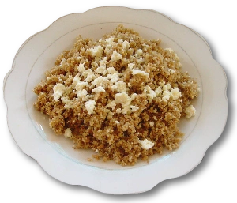
Piri
Es elaborado de harina de maíz amarillo o maíz morocho tostado, leche, sal, queso. Esta preparación se le puede acompañar con café o mote
Beni
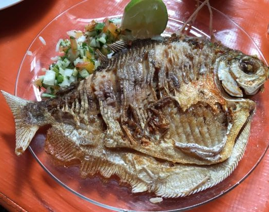
Pacú Frito
Plato elaborado con pacú empanizado (pez que crece en los ríos de la región), acompañado de yuca frita, ensalada de lechuga y tomate.
Tortilla de Huevo de Peta
Elaborado con huevo batido de peta (tortuga) con cebolla picada, harina de trigo, comino, pimienta y sal. Puede ser servido con una gran variedad de guarniciones o simplemente solo.
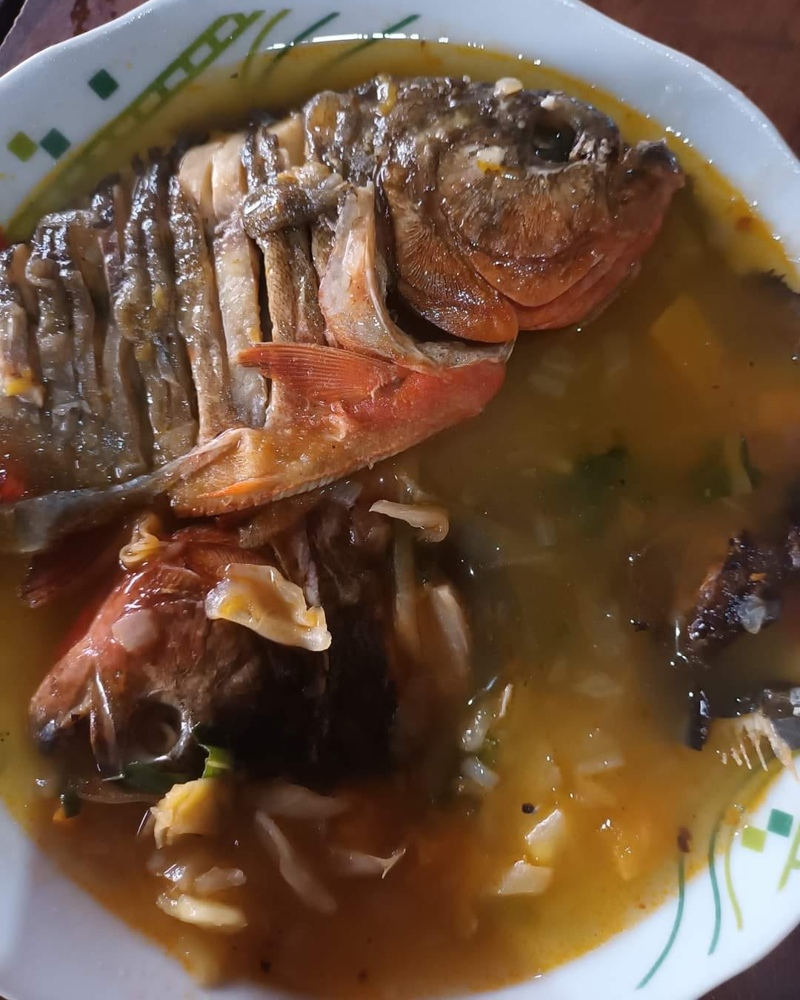
Sopa de Piraña
Reconocida por sus atributos reconfortantes y vigorizantes. Es una sopa espesa que se elabora con este pez de río y condimentada con ingredientes frescos.
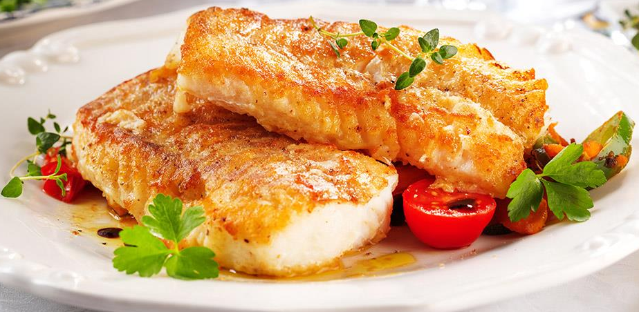
Surubí al Horno
El surubí también es un pescado que crece en esta región. Se consume usualmente al horno y acompañado de yuca frita, arroz graneado o una ensalada de lechuga y tomate.
Chuquisaca
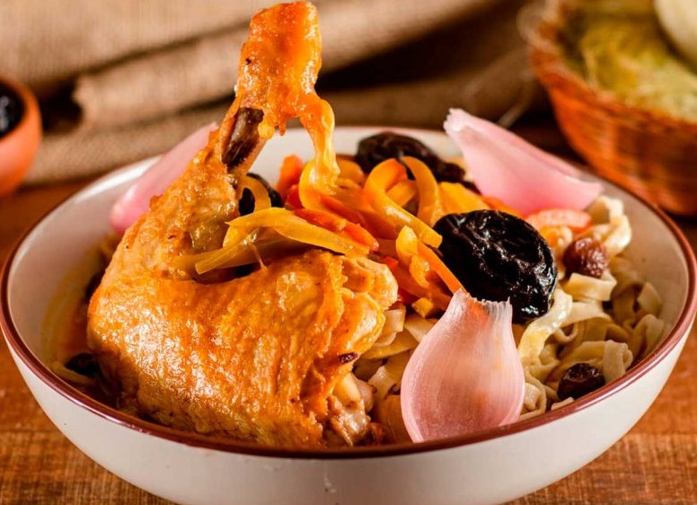
Ckocko de Pollo
Consumida en Chuquisaca y Potosí. Sus ingredientes son las presas de pollo, cebolla, tallarin, clavo de olor, chicha de maíz, ajo y ají amarillo característico de la región.
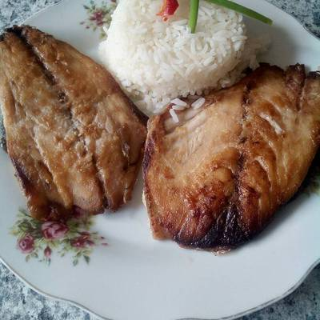
Pescado al Horno
Puede ser acompañado con arroz, ahogados, ensaladas y/o consumido con limón.
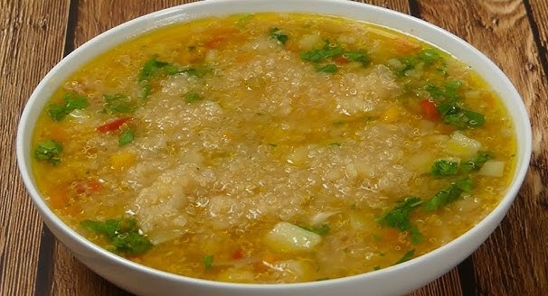
Sopa de Quinua
Sopa de verduras, carne de res o pollo y quinua. Es altamente nutritiva. Consumida en todo el país.
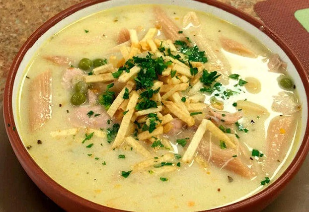
Sopa de Maní
Una sopa de verduras y fideo, donde el principal ingrediente es el maní licuado hervido con el resto. Algunas versiones incluyen carne de pollo o res.
Santa Cruz
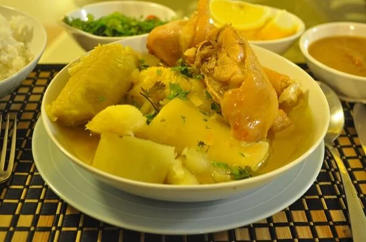
Locro de Pollo
Plato típico del oriente, es un caldo de gallina criolla que contiene, arroz, papa, cebolla, platano verde y se acompaña con yuca.
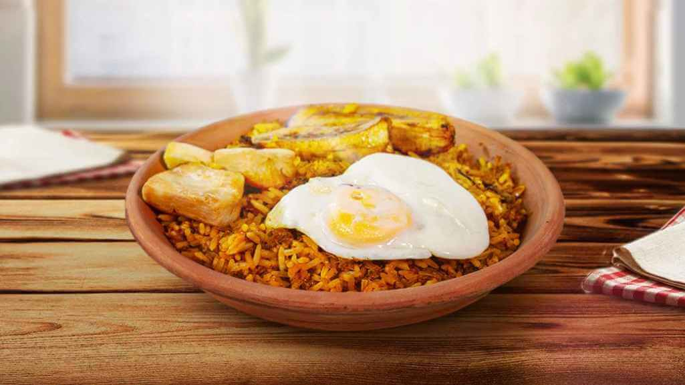
Majadito
Un plato de arroz guisado con charque de res, huevo y plátano. Su llamativo color lo da la semilla de urucú, proveniente de un árbol del mismo nombre muy común en el oriente boliviano.
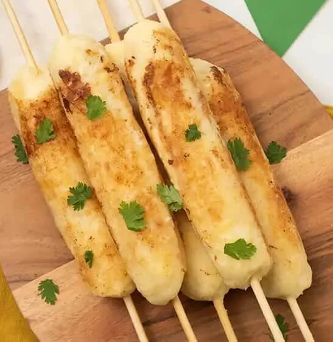
Sonso
Este platillo combina la suavidad de la yuca con la riqueza del queso, y es una verdadera delicia que puedes disfrutar de tres maneras diferentes: a la parrilla, al horno o en la sartén.
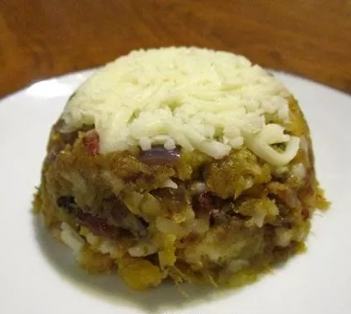
Masaco
Un platillo donde el principal ingrediente es la yuca aplastada, existen también masaco de platano, arroz o maíz. Puede acompañarse de queso, charque o carne cerdo.
Pando
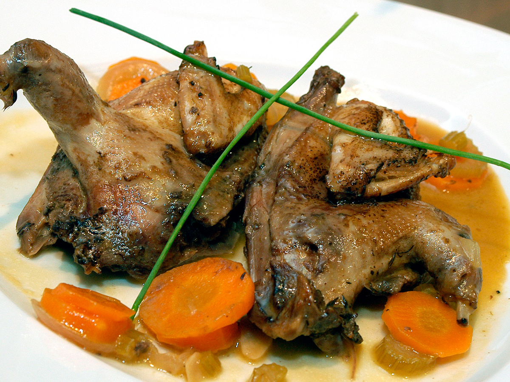
Escabeche de Torcaza
Elaborado con carne de torcaza o codornices, también incluye cebolla, hoja de laurel, zanahoria, aceite de oliva, vinagre de uva, locoto, caldo de pollo, pimienta negra en granos y sal.
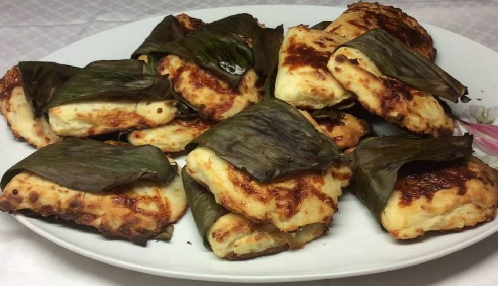
Pan de Arroz
Es un pan típico de la región, preparado con harina de arroz que queda perfecto en la hora del té. También se prepara en otras regiones.
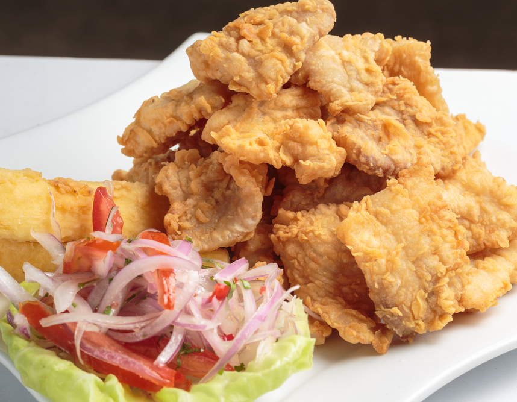
Chicharron de Surubí
Este platillo se compone simplemente de Surubí rebozado y luego frito con yuca también frita en aceite. Es simplemente espectacular y uno de los más queridos en la región oriental.
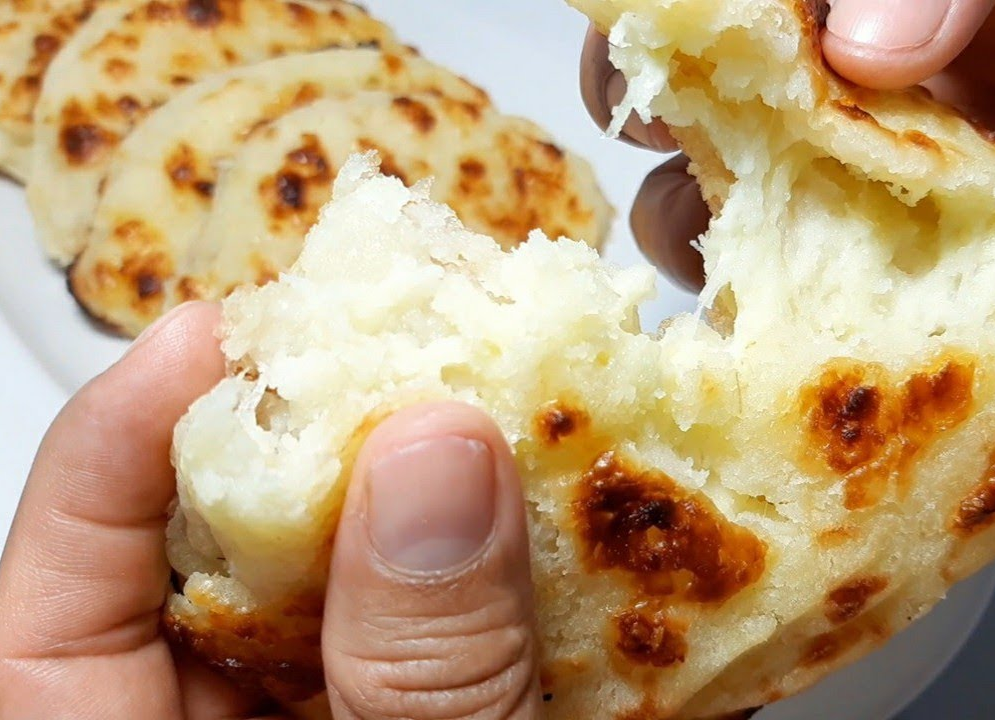
Empanada de Arroz
Esta empanada se prepara con harina de arroz y tiene diversos rellenos elaborados por las caseritas y caseritos de la zona.